LocalLens: a worklog
- Type
- Project · worklog · on-device ML
- Hardware
- iPhone 17 Pro (A19 Pro) · iOS 26 · nothing leaves the device
- Stack
- Swift · Core ML · ARKit · Metal · Foundation Models
- Code
- github.com/pranav6670/LocalLens
- Read
- ~35 minutes · July 2026
- 0The system in one page
- 1The system at a glance
- 2The performance ladder
- 3Model work
- 4From frames to memory
- 5Spatial memory
- 6The on-device agent
- 7When the world moves
- 8How it was built
- 9Retrospective
- 10What's next
- 11Resources
0 The system in one page
I spent thirteen weeks building LocalLens: an iPhone app that watches a room through the camera, remembers every object it sees, and later walks you back to any of them. You ask “where did I leave my water bottle,” an on-device language model answers with when and how far (“about 1.0 m away, seen 24 minutes ago”), a 3D arrow points the way, and a targeting reticle ratchets onto the bottle when the camera can see it again. Everything runs on one iPhone 17 Pro. During a full capture-and-search session, Instruments’ network instrument recorded zero bytes on the wire.
The other half of the project is the part the clip can’t show: the live perception loop got 3.2× faster, on purpose, one measured change at a time. Table 1 is the whole performance arc; the rest of this post explains how each row happened, including the two places where my first explanation was wrong. The build ran thirteen calendar weeks, and the post cites them by number when the timing matters; Table 4 in Section 8 says what each week was.
| Stage | Change | e2e p50 (live) | Note |
|---|---|---|---|
| Baseline | Vision path, every frame | 13.5 ms | week 1 (inference alone: 13.4 ms) |
| + warmup, compute units | .all, 1-shot warmup | 13.5 ms | runtime flat; load 30× faster |
| + Metal preprocess | GPU letterbox | 8.9 ms | 1.52×; the resize was the cost |
| + pipelining | 1-frame lookahead | 8.44 ms | tail −9%; overlap claim later corrected |
| + multifunction 320 | scheduler fast path | 4.2 ms | 3.2× vs baseline |
| Scheduler ablation | adaptive + thermal | −82% detections and p95 −35% | |
The spatial half has its own scorecard. When the app re-observes an object it already anchored in 3D, the new position and the stored one agree within a median of 2.8 cm (n = 33 re-anchors: one furnished room, a single session of walk-away-and-re-approach, everything inside the detector’s few-metre useful range). Guidance locks onto a re-detected target in about a second, and the agent never sees more than five rows per tool call.
The clip above is that arc in one take: ask → arrow → reticle. Three frames of it, for skimmers:
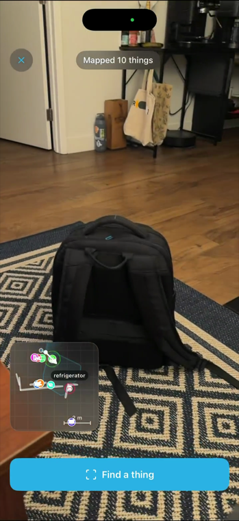
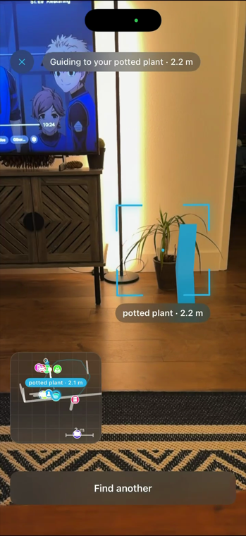
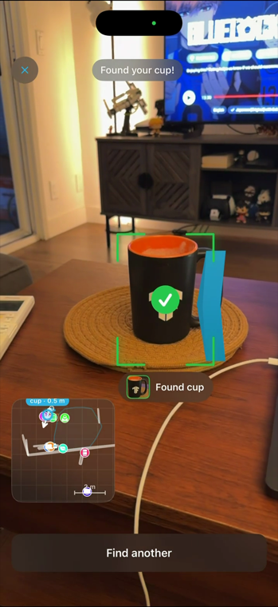
1 The system at a glance
Figure 2 is the whole machine. Sensors on the left (camera frames, LiDAR depth, pose from ARKit’s visual-inertial world tracking, plane anchors), three compute engines in the middle with the work split deliberately between them, a spatial-semantic memory in SQLite, and two consumer surfaces on the right: Explore (map, ask, guide) and Memory (recall). The entire engineering bench (the live HUD, timeline, keyframe search, and every benchmark in this post) ships in the same binary behind a Developer Mode toggle.
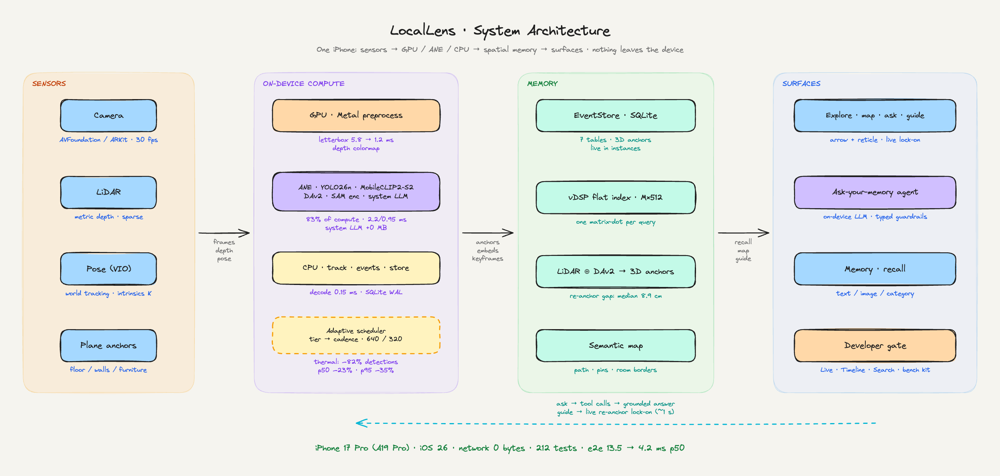
| Model | On-disk size | Role |
|---|---|---|
| YOLO26n (multifunction 640/320) | 5.0 MB | detector, every live frame |
| MobileCLIP2-S2 (image + text) | 190 MB (69 + 121) | shared embedding space for recall |
| Depth Anything V2 small (518/364) | 48 MB | dense relative depth for 3D anchoring |
| SAM 2.1 Tiny (enc + dec + prompt) | ≈76 MB | tap-to-segment |
| System language model | +0 MB | the agent; ships with iOS 26 |
Hardware and OS, since reproducibility is the credibility: every number in this post comes from one iPhone 17 Pro (A19 Pro: CPU, GPU, and a 16-core Neural Engine, the ANE from here on), iOS 26, camera at 30 fps, LiDAR at its native sparse resolution. No simulator numbers anywhere. Continuous 30 fps capture held the device at nominal-to-fair thermal state through the instrumented runs; what sustained load does to latency, and what the scheduler does about it, is Section 2’s territory.
The engine reaches beyond the live camera: an offline video import (PHPicker)
runs the same detect-track-embed pipeline over saved clips, and App Intents expose search to
Siri and Shortcuts.
Privacy is an architecture choice here, not a settings page. Frames, embeddings, thumbnails, positions, and the agent’s reasoning never leave the device; search runs against a local index; the OS-level Spotlight integration indexes keywords only, and Clear Memory wipes both the store and that OS index together. The receipt is empirical: the Week-8 whole-system profile includes a networking instrument arm, and it flatlines at zero bytes.
One more piece of shared context. The post is organized by system, not by date, but it cites the calendar constantly, because when a number was measured matters to what it can claim. Table 4 in Section 8 is the map those citations point into.
2 The performance ladder
This section is the spine of the project: seven rungs, each one a hypothesis, a change, and a number. Figure 3 shows where it ends up. The scope line, so the benchmarks don’t blur together: this section prices the pipeline around one fixed detector, end to end per frame; Section 3 prices the models themselves. The big wins came from finding out where the time actually was; both of my early explanations that skipped that step turned out wrong. Fair warning: this is the densest section in the post. The product story in Sections 4–7 reads fine without it, and Table 3 at the end of this section compresses all of its evidence into one place.
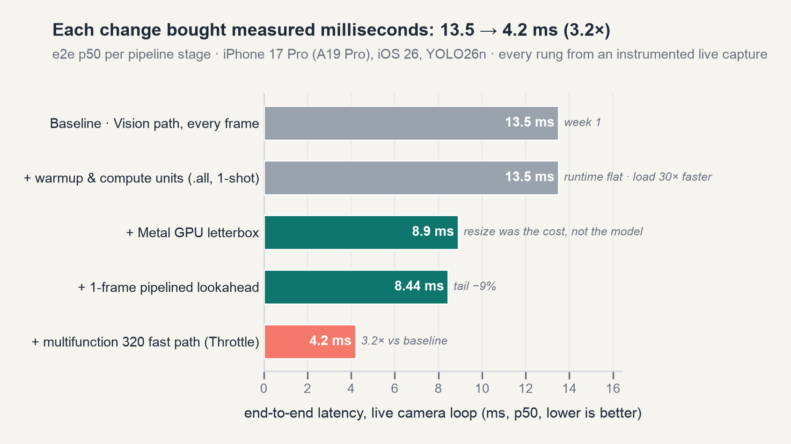
2.1 Baseline: measure before touching anything
Week 1 ended with a live pipeline (AVFoundation capture → Core ML
YOLO26n[1] → SwiftUI overlay) and a 302-frame
instrumented capture: inference 13.4 ms p50, 15.5 ms p95; end-to-end 13.5 ms p50 with
decode at 0.15 ms. Those two baseline numbers anchor everything below, and the
os_signpost spans that produced them stayed in the build for all thirteen weeks.
From day one, no claim shipped without a CSV behind it.
2.2 Warmup and compute units: cheap table stakes
First-inference penalty was +0.87 ms cold; a single warmup shot cut it to +0.30 ms, and
five shots bought only 0.04 ms more, so the app warms with one. Compute units mattered less
at runtime than at load: .all matched .cpuAndNeuralEngine on latency
but loaded 30× faster. The dead end stays in the record: .cpuAndGPU does not
run this model at all: YOLO26’s attention blocks crash MPSGraph, a clean throw on the iOS
version I started on and a process kill on the one I finished on.
Cold start belongs in the same ledger, from the Week-8 launch trace: first frame at 671 ms, camera live at 938 ms, first detection at ~8.3 s, gated not by launch but by a deliberate 4.9 s pipeline-start delay plus ~3.4 s of one-time ANE compilation. The same trace caught the CLIP tokenizer parsing its 3.2 MB vocabulary on the main thread (~26% of main-thread weight); moved off-main, it now costs 0.007%.
2.3 The op-placement map: trust, then verify
MLComputePlan says 83.1% of the model’s cost-weighted compute (276 of 297 ops)
lands on the Neural Engine, 16.9% on CPU, and exactly 0% on GPU. The lab measurement agrees:
8.39 ms per predict on cpuOnly against 2.19 ms on .all, 3.8×
end to end and about 9.1× for the ANE-placed portion alone. A Week-8 hardware trace later
confirmed 100% of inference dispatches on the ANE: yolo-640 at 2.2 ms, yolo-320 at
0.95 ms. On this hardware you don’t hand-place ops; you verify the OS scheduler placed them
for you.
2.4 Metal preprocessing: the cost was never the model
With inference at 2.2 ms on the ANE, where did 13.5 ms go? Vision’s convenience path
resizes every frame on the CPU: 5.8 ms of letterboxing per frame, hiding inside the
“inference” span. Replacing it with a Metal compute kernel (zero-copy from the camera via
CVMetalTextureCache, letterbox on the GPU, feed Core ML directly) cut the resize
step to 1.2 ms (4.8×) and the live loop from 13.5 ms to 8.9 ms p50 (1.52×; p95
1.65×). The GPU letterbox costs about 1.2% of wall time. This rung carried the lesson the
rest of the ladder repeats: the bottleneck was one layer down from where it looked.
2.5 Pipelining, and the first correction
A one-frame lookahead lets the GPU letterbox frame N+1 while the ANE runs frame N (Figure 4). The plumbing is allocation-free at steady state: the camera buffer is wrapped zero-copy, and the lookahead runs on a two-slot buffer pool, so no Metal textures or pixel buffers are minted per frame. Measured: 8.91 ms → 8.44 ms p50, tail down 9%, camera lag flat. Real, modest, worth keeping.
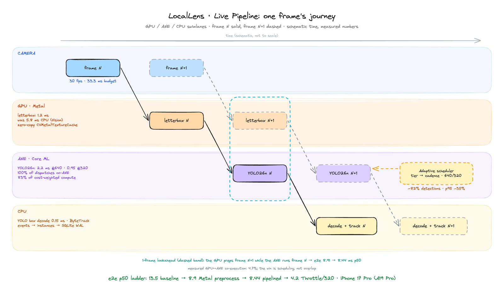
For five weeks I described this rung as “GPU/ANE overlap.” The Week-8 hardware traces show the two engines co-execute 4.7% of the time, incidentally, and strictly serially per frame. The lookahead helps by scheduling, not by parallel execution: the letterbox simply leaves the critical path. The number was right; my mechanism story was wrong until a trace said so.
2.6 Cadence and resolution: the levers that actually move
Two levers remained. Detect-every-N: run the detector on every Nth frame and let the tracker
coast between, which takes mean per-frame cost from 13.49 ms to 3.24 ms at N=5 with no
measurable identity loss in my scenes (Section 4 has the caveat on that
proxy). And input resolution: a multifunction .mlpackage carries 640 and 320 entry
points over shared weights, and 320 cuts inference by about a third. Resolution turned out to
be the compute-bound axis on the ANE, unlike weight quantization, which
Section 3 shows is latency-flat. On the pipelined loop the 320 fast path
lands at 4.2 ms p50 end to end: the bottom of the ladder, 3.2× from
baseline.
2.7 The adaptive scheduler: spend the headroom on purpose
All of the levers meet in a scheduler (Figure 5). It is two pure functions. Layer A maps system state to a tier ceiling: thermal pressure or low battery walk it down Full → Balanced → Saver → Throttle, and a latency-headroom check drops one extra step when p95 leaves budget. Layer B decides what this frame runs: task t fires at frame n iff
with the detect interval doubled when inter-frame motion falls below 0.02 and forced to fire on a scene change. Tiers set both cadence and resolution (Full detects every frame at 640; Throttle detects every 5th at 320). No I/O anywhere in the policy, which is why the whole state-by-content matrix is unit-tested on a Mac.
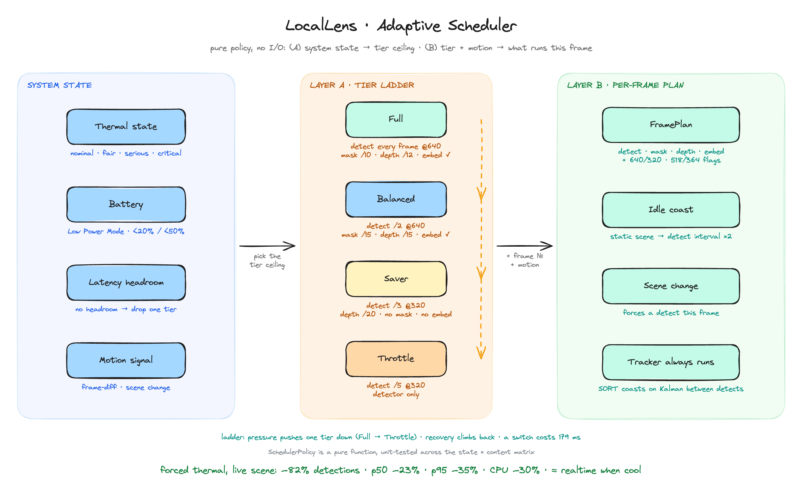
The ablation (Figure 6) is the strongest evidence in this section. Four policies, ~45 s each, live scene, forced thermal override on the last: adaptive matches realtime when cool (it costs nothing to have), and under thermal pressure it runs 82% fewer detections (161 vs 907 over ~1320 frames) while each remaining detection is 23% cheaper at the median and 35% cheaper at the tail. The power instrument agrees across every engine: CPU power-impact down 30%, retired instructions down 22.7%, ANE impact down 19×, GPU busy residency down 47% (the GPU never leaves its minimum performance state in this workload). Per-phase gating shows the mechanism: inference dispatches fall from 15.0/s to 2.9/s Full → Throttle, and mask, depth, and embed fall to zero. Honesty about the units: those are Apple’s relative power-impact indices, not Joules; the device sat on a charger during the run, and per-session battery drain was never instrumented (Section 9 keeps that gap on the record). A static schedule cannot produce that combination.
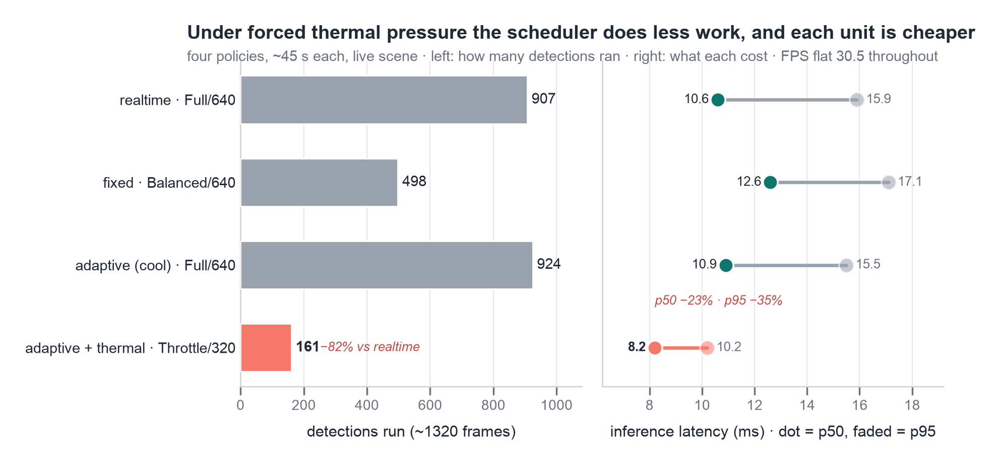
My original Week-7 deliverable said “prove FPS holds under the scheduler.” FPS was never at risk: preview frame rate is capture-bound at 30 and stays there under every policy (Figure 7). The metrics that move are latency and energy, so those are the ones the ablation reports. I kept the wrongly-framed deliverable in the worklog because picking the wrong success metric is a bug too.
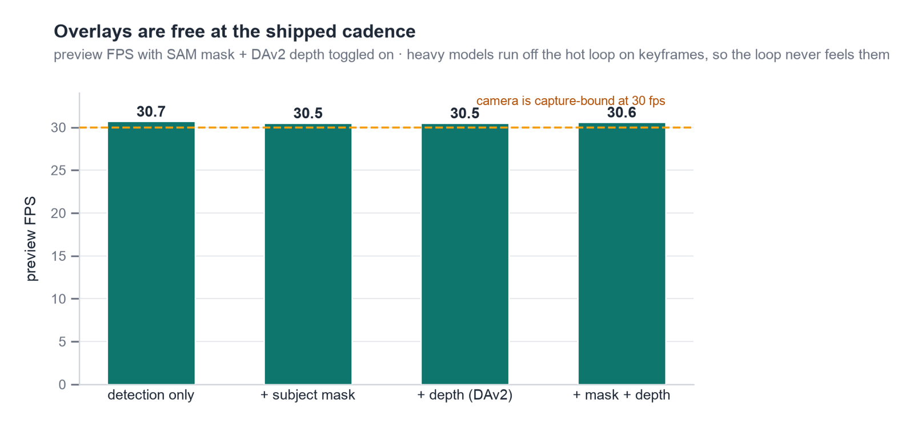
Under sustained load the same YOLO predict drifts from 3.3 ms to 6.0 ms, and under a forced thermal state the ANE’s Full-tier configuration collapses 19×. The scheduler exists because the hardware’s good mood is not a constant. A later re-run made the point organically: on a heat-soaked device (thermal “serious,” no override anywhere), adaptive sat itself at Throttle/320 and delivered 3.8 ms end to end while forced realtime pushed 6.9 ms at Full/640.
2.8 What the fast path costs, and the ablation index
The 4.2 ms row is not free, and the price belongs next to the win. On the same COCO128 harness as the quantization study, the 320 fast path gives up 9.5 pp of mAP50-95 against the fp32-at-640 reference (8.8 pp of that is pure resolution; the rest is fp16 at the smaller input). The depth model’s fast variant is much cheaper: 364-px output agrees with the 518-px pass at Pearson r = 0.984 with 3.5% mean absolute error (n = 32 images). The trade is sane because of when it engages: the scheduler only drops to 320 under thermal pressure or low battery, where the realistic alternative is not 640-quality detections but fewer detections of any kind, and it climbs back to 640 the moment the device cools. The other quality lever, detect-every-N coasting, carries the proxy caveat of Section 4.
A second profiling session, run on the finished build (agent and absence sweep alive, which the Week-8 profile predates), closes the ledger’s two oldest gaps. Memory: the whole app’s physical footprint holds a median of ~670 MB with a session high-water mark of 804 MB, across a wired sweep and an unplugged run; that is the price of keeping the 190 MB embedding model, SAM, depth, the detector, and ARKit’s buffers resident at once. Battery: unplugged at 54% brightness, the drain rate averaged 36.4%/hr, call it 6% of battery per ten minutes of active mapping-and-asking. The per-process power split on that run reads CPU 9.2, display 1.9, GPU 1.4 (relative indices again), and networking 0.00: the privacy receipt, re-confirmed on the shipped configuration with the agent running. A Metal system trace on the AR path re-confirmed the GPU story too: minimum performance state 98.7% of the run. The honest residue: those sessions are short (~2.5 minutes each) and unsegmented, so per-phase memory (mapping vs asking) remains unmeasured, and the ANE power arm was not re-captured.
Seven ablations back this post’s engineering claims. Table 3 is the index, and it is reproducible: every bench that produced these numbers ships inside the app behind the Developer Mode toggle (Figure 20).
| Ablation | One-line finding |
|---|---|
| CPU vs Metal preprocess | the resize was the cost, not the model; e2e 13.5 → 8.9 ms |
| detect-every-N + tracker | cadence is the per-frame-cost lever; the tracker coasts between detects |
| quantization Pareto | latency flat across variants; quantization buys size, not speed |
| preprocess modes, 3-way | Vision vs Metal-serial vs Metal-pipelined; pipelining overlaps the letterbox with the predict |
| overlay matrix | mask + depth toggled on cost 0 preview FPS at the keyframe cadence |
| scheduler matrix | observed tier = expected on all 32 state combos; FPS flat |
| scheduler-policy ablation | −82% detections and cheaper units under forced thermal |
| whole-system profile | live-vs-lab gap was Vision’s CPU resize; overlap disproven; network 0 bytes |
| fast-path parity | 320 detector −9.5 pp mAP50-95; 364 depth r = 0.984, 3.5% MAE |
3 Model work
Where Section 2 measured the pipeline wrapped around one detector, this section measures the models themselves: which variant, which encoder, which compute unit. Four models ship in the app and each one earned its slot through a measurement, including the eval that fooled me first.
3.1 Quantization: a size lever, not a speed lever
The Pareto in Figure 8 compares YOLO26n variants on COCO128[2] parity against a PyTorch FP32 reference. fp16 matches the reference within noise at 4.84 MB. Six-bit palettization is the surprise: 2.07 MB (57% smaller than fp16) at +1.49 pp mAP50-95, right at my 1.5 pp gate. Linear int8 is dominated outright, larger and less accurate than pal6 (+9.46 pp), because symmetric linear bins waste resolution on YOLO’s long-tail attention weights while k-means codebooks spend theirs where the mass is. pal4 is catastrophic (+41.7 pp, zero of eight reference boxes matched) and rides the top of the chart as a warning.
The latency half of the story changed my mental model. On-device latency is flat across all four variants, 7.1–7.6 ms p50 in the same live harness. Weights are expanded to a working precision for ANE execution regardless of how they sit on disk, so bit-width buys footprint, not cycles, while input resolution (Section 2) buys cycles. The app ships fp16 and keeps pal6 as the size-constrained fallback.
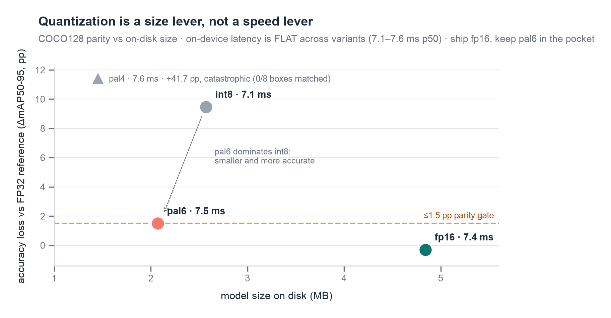
3.2 Choosing the embedding model with a real retrieval eval
For semantic recall I needed an image/text embedding model, and my first comparison (cosine similarities on a single test image) pointed at the wrong variant. Single-image scores reward whichever model happens to like your test photo. The decision eval that replaced it retrieves over a COCO subset and scores recall@k and MRR per variant; MobileCLIP2-S2[3,4] won that, and its 190 MB (69 image + 121 text) is the app’s biggest asset by far. That habit stuck, and model choices got retrieval evals from then on.
3.3 Per-model compute placement is a design axis
SAM 2.1 Tiny[5] would not compile for the ANE:
its mask decoder’s dynamic-shape deconvolutions are ANE-incompatible, and requesting
.all costs a 1.9 s load-time fallback dance before ending up on GPU anyway. The
shipped configuration pins the encoder to .all (it does run on the ANE) and the
decoder to .cpuAndGPU explicitly, which loads 9× faster and runs identically.
Placement is per-model engineering: the same project carries a model that must avoid
.cpuAndGPU (YOLO26n, Section 2) and one that requires it.
The longest-standing open mystery in the project was that live inference read ~3× slower than the same model on a synthetic buffer in the lab, and for five weeks I carried “pipeline overhead” as the explanation. The Week-8 Instruments pass found the real cause: Vision was running its CPU resize inside the request handler, so the live “inference” span silently included preprocessing. Live predict 4.56 vs lab 2.47 ms once separated. Two earlier claims in my own worklog got corrected on hardware evidence that week, and both corrections are in this post.
4 From frames to memory
Detection gives you boxes per frame. Memory needs identity over time (tracks), meaning (events), appearance (embeddings), and recall. This section builds that chain; its schema is Figure 9, and Figure 10 is the chain read back in the app.
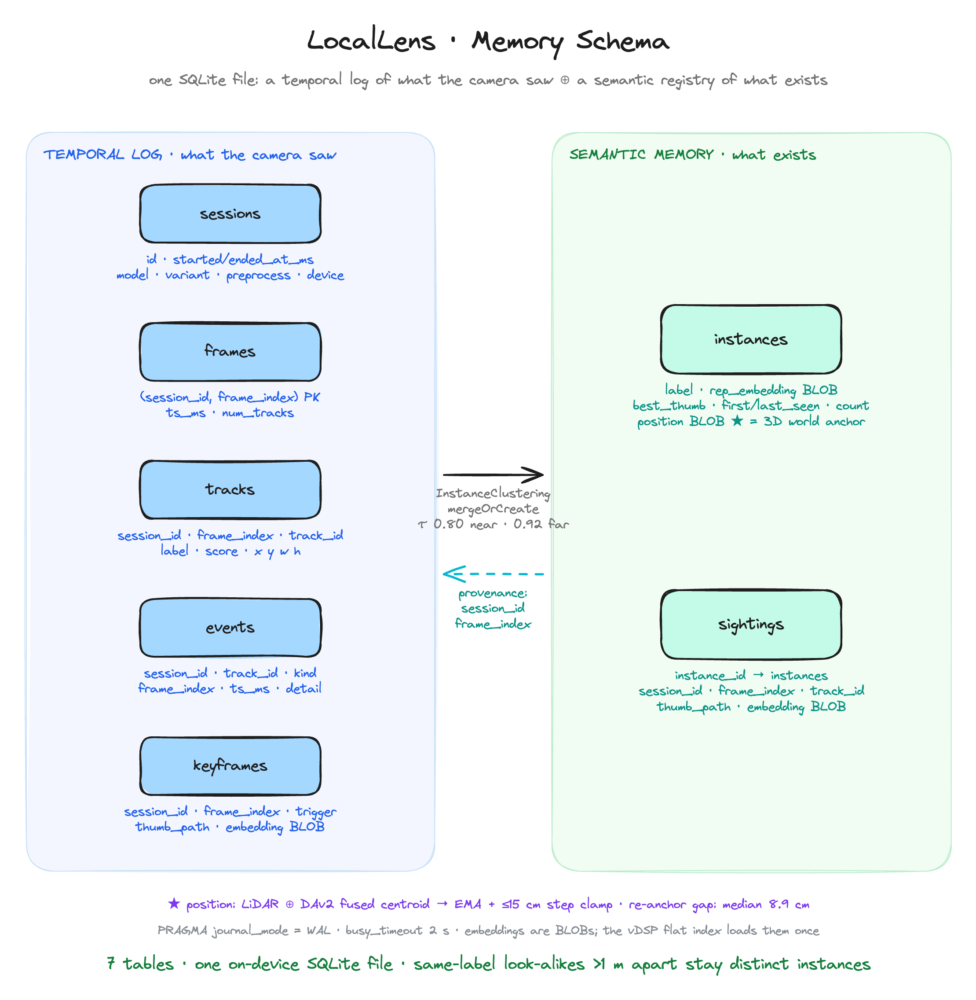
position blob on instances is the 3D anchor of
Section 5.4.1 Tracking: correct first, honest about accuracy
The tracker is SORT[6] with ByteTrack’s[7] second association: high-confidence detections match tracks first, then leftover tracks get a second chance against low-confidence detections, which sustain a track through motion blur but can never create or confirm one. Track identity is deliberately ephemeral: brief blur is bridged by that second association, fast pans are dropped upstream before they can smear boxes (Section 5’s gate), and an object that leaves the frame and returns simply gets a new track id. There is no visual re-identification at this layer; stitching re-appearances into one persistent thing is the instance layer’s job, by appearance merge and, later, by the geometry rules of Section 7. All of it is pure Swift, built test-first (the suite went from 1 test to 39 the week the tracker landed, paying down a debt flagged in two earlier retros). The caveat, kept from the worklog: my identity-stability proxies (new-id rate, mean track lifetime) were too low-event in a slow scene to price detect-every-N’s cost, so “no measurable identity loss” means exactly that. The instrument that would settle it is MOTA/IDF1 on a labeled clip, which this project never ran.
One bug from this layer earned permanent respect for integration tests: coasted frames carried a decoder coordinate transform from the wrong input size, which only manifests at N > 1. A CLI mirror of the math had passed; the on-device run caught it. Mirrors prove logic, only the device proves integration.
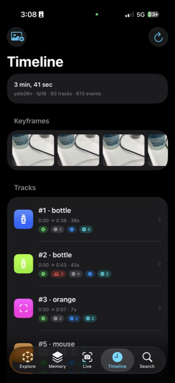
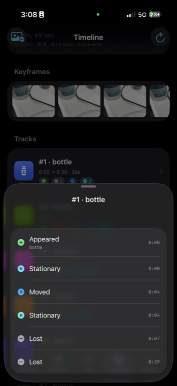
4.2 Recall: a flat buffer and one matrix multiply
Keyframes (scene-change, motion, and periodic triggers) get MobileCLIP2-S2 embeddings, and recall is deliberately dependency-free. All M instance embeddings live in one contiguous Float32 buffer, structure-of-arrays, loaded once from SQLite blobs. Embeddings are L2-normalized, so cosine similarity is a dot product, and scoring a query is a single matrix-vector multiply:
one vDSP_mmul call, exact top-K, no approximate-nearest-neighbor library. At
this corpus size (hundreds of instances, not millions) exact search is microseconds, and “no
index to go stale” is a feature. Figure 11 traces a query end to end (Figure 17 in
Section 6 is the same machinery as the user sees it); the tokenizer feeding
it is a hand-rolled CLIP[8] byte-pair encoder whose
token ids are validated against open_clip[9]
outputs in unit tests.
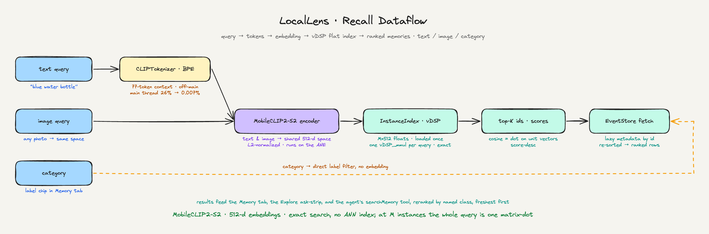
The hybrid re-ranker (embedding score plus label/event/recency boosts) once “improved” top-1 recall from 0.40 to 1.00 on my eval, because the eval’s labels leaked into the boost. A control column with label boosts disabled showed honest parity instead of a win. The eval caught its own circularity only because I made it print the control, and I deleted the claim.
What actually ships, stated with the eval’s own numbers: embedding-only recall@3 was 0.40 (mean reciprocal rank 0.379) over the 605-keyframe corpus, with zero recall@3 on person, bottle, and keyboard. That is the classic CLIP gap between scene-level and object-level similarity, and it is exactly why production keeps the label and recency boosts the eval could not credit without bias, and why the agent’s tool rows get the class-aware re-rank of Section 6.
5 Spatial memory
Weeks 9–12 turn “I remember seeing a cup” into “the cup is 2.3 m that way.” The pieces: a perception loop that runs beside ARKit without starving it (Figure 12), a depth fusion that makes a monocular network metric (Figure 13), an anchor update rule that survives bad observations, and a guidance UX that went through four designs before one was honest about its own error sources.
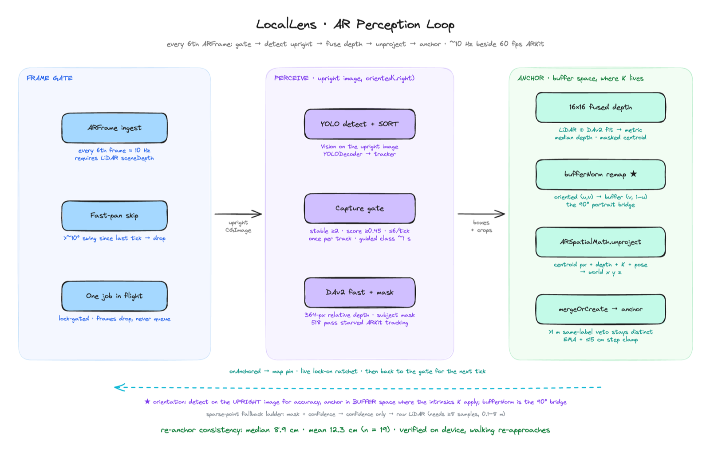
5.1 The loop, and one coordinate remap
The phone is held portrait but the sensor buffer is landscape, and the intrinsics K live in
buffer space. Detection quality is far better on the upright image, so the loop detects on
.oriented(.right) and bridges results back through one remap,
sampling LiDAR in buffer space and the depth-model/mask outputs in oriented space. Getting this bridge wrong doesn’t crash; it anchors things 90° away from where they are, which is why it gets its own box in the diagram and a CLI test.
5.2 Depth fusion: least squares in inverse-depth space
LiDAR is metric but sparse and noisy at silhouettes; Depth Anything V2[10] (DAv2 from here on) is dense but scale-free, and it predicts relative inverse depth, so its ambiguity is exactly an affine one in inverse-depth space. Over a 16×16 grid per detection box (points kept by subject mask and LiDAR confidence, LiDAR valid in 0.1–8 m), fit
guarded against ill-conditioning (var(d) > 10−6(1+d 2)), then drop residuals beyond 2σ (LiDAR edge noise) and refit once. Dense metric depth is ẑ = 1/(s·d + t) with the denominator floored, the box’s depth is the median over kept samples, and if fewer than eight pairs survive, the code falls back to the raw LiDAR median. The anchor position comes from unprojecting the masked centroid,
and the object’s physical extent, used later to size the reticle, is
wm = wpx ẑ / fx. DepthFusion is pure Swift
with no ARKit types; the fit ran against synthetic cases on a Mac before it ever ran in AR,
which caught a constant-patch conditioning bug off-device.
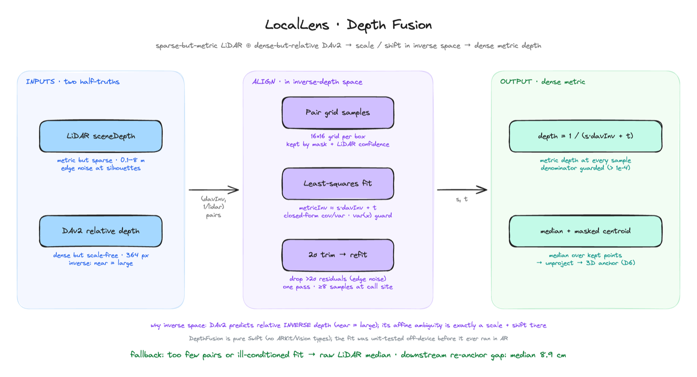
5.3 Anchors that survive their own observations
A stored anchor updates by exponential moving average (EMA) with a step clamp:
so no single re-observation can drag a position more than 15 cm. Two more rules keep the registry honest. Same-label look-alikes more than 1 m apart (both 3D-anchored) never merge. Without that veto, two monitors collapsed into one instance whose dot jumped around the map, and the bug surfaced precisely because the map’s “mapped: n” counter refused to flatter the over-merge. And the evidence metric records every re-anchor gap g = ‖pnew − p‖ raw, before the EMA, so the smoothing can’t grade its own homework.
The metric earned its keep immediately. An early run reported median gap 11.3 cm but mean 34.6 cm; that spread is the signature of an outlier tail, and the tail traced to occasional bad fusion fits dragging anchors. The 15 cm step clamp above is the fix the metric bought. The verified run after hardening: median 8.9 cm, mean 12.3 (n = 19).
A second, humbler lesson from the last week: to export the raw gaps for the histogram below, I first made the store append one ~30-byte CSV line per re-anchor. Found-target boxes started landing visibly wrong even on freshly mapped objects. Reverting the anchor path to in-memory-only (the CSV is now built on demand at export time) restored accuracy on device. File I/O near the perception path is a latency tax that shows up as spatial scatter, the same disease as the main-thread hangs in Section 6. The rule is now written into the store: the anchor path never touches the filesystem.
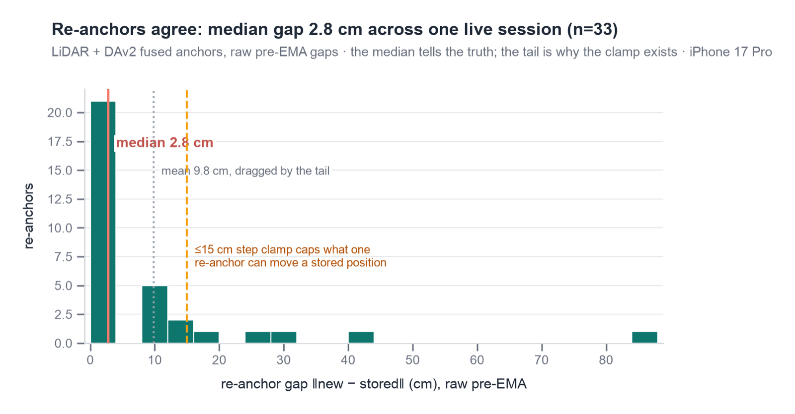
The bounds on that evidence, stated rather than implied: the n = 33 run is one furnished room in a single session, following a fixed protocol (map the room, walk away, re-approach, guide; the ~1 s guided-class refresh accumulates gaps fastest), with every engagement inside the detector’s few-metre useful range. It is a same-room, same-session consistency number, not a cross-environment accuracy claim, and the spread runs 0.2 cm to 86.6 cm with p90 at 19.2 cm; the p90 is what later sizes Section 7’s identity radius.
5.4 Guidance: four designs to an honest one
The found-target UX went beacon → chevron stack → extruded 3D arrow → projected reticle, and the discarded step matters. I built the flashiest option, a segmentation-mask highlight that makes the found object glow through its own outline, and abandoned it: a mask rendered over the AR camera cannot be aligned (the display transform between buffer and screen is not what the naive math wants) or kept current (segmentation latency lags camera motion). The reticle uses the exact projection of the anchor instead, sized by the stored physical extent, with corner brackets that snap green with a haptic on arrival (Figure 15). Arrival itself is hysteretic (inside 0.85 m counts as found, and it un-finds only beyond 1.1 m), so the state doesn’t flicker at the boundary.
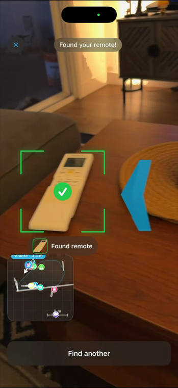
The whole spatial system reduces to one rule: navigate by memory, verify by perception. The stored anchor only steers the walk-over. The moment the guided object is re-detected live, the target snaps to the fresh observation, and the guided class is re-captured about once a second while guiding, so the reticle ratchets onto the object as you approach. Stored positions carry irreducible biases (first-view surface point, session drift); the design stops trusting them exactly when something better exists.
Two honesty notes about the substrate itself. Every coordinate lives in ARKit’s session frame, and visual-inertial odometry drifts with distance and with texture-poor scenes, so an anchor inherits whatever drift had accumulated when it was filed; within a room the guided-class refresh keeps re-observing and correcting, and perception is gated on ARKit’s tracking state, so relocalization wobbles pause anchoring instead of filing garbage. There is no loop-closure correction of stored anchors beyond what ARKit does in-session, and a previous session’s anchors are dead reckoning until their objects are re-seen (Section 10’s first item). And low light degrades the stack detector-first: LiDAR keeps ranging while the detector’s recall fades, which shows up as fewer fresh observations rather than wrong anchors. Everything here was measured in ordinary indoor lighting in one room; multi-room traversal and dim scenes are untested, and Section 9 logs both.
6 The on-device agent
Week 12 put a language model in front of the memory: ask a question in English, get a grounded answer and a tappable “Take me there.” The model is Apple’s system LLM via the Foundation Models framework[11], which means the biggest model in the app adds zero bytes to the bundle. What made it work on a small model was treating the LLM as an untrusted component and enforcing every guarantee with a typed mechanism the app controls, not a sentence in the prompt. Figure 16 is the sequence; Figure 18 is the enforcement.
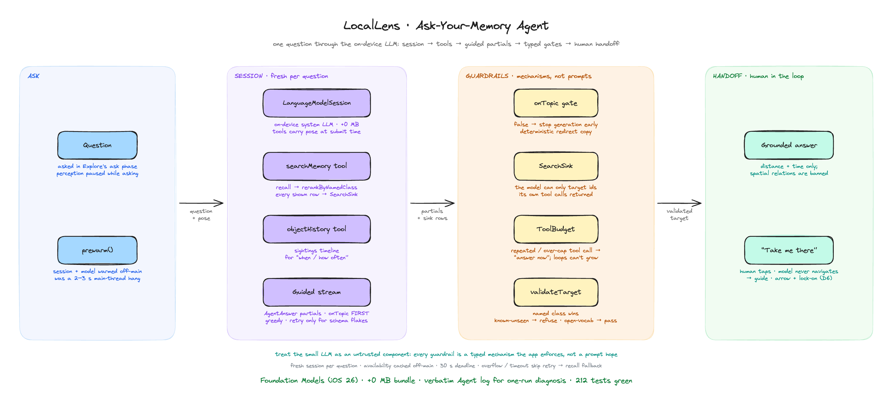
6.1 Mechanisms, not prompts
Six production failures, six mechanisms. Each round started with a user-visible wrong behavior and ended with something deterministic; none of them ended with “strengthened the prompt” alone.
Off-topic answers (“what is 2+2”): the guided output type declares an
onTopic boolean as its first property, and guided generation emits
properties in declaration order, so the gate streams before the answer text. The app stops
generation on false and shows deterministic redirect copy. The gate is typed and it
fires before the model has said anything quotable.
Hallucinated targets (“take me there” pointing at an id the model invented): every row a tool actually returns is recorded in a sink, and the model’s proposed target is honored only if it appears in that sink. The app checks provenance instead of extending trust. The five-row cap on every tool result is part of the same design: it keeps the transcript small on a 4k-context model, and it keeps the provenance set small enough that validation stays trivial.
Wrong-class targets (asked for the mouse, guided to the keyboard; embedding similarity blurs object words inside sentences): a deterministic validator with four ordered rules. Only located rows count; if the question names a class present among them, that class wins, whatever the model proposed; if it names a class the detector knows (the 80-label COCO vocabulary) but has never seen, refuse guidance and say so; otherwise (open vocabulary, “my keys”) the model’s pick from seen rows stands, because appearance is the only arbiter left. The same class-aware, freshest-first re-rank is applied to the rows the model sees and to the visible recall strip (Figure 17, left), so every surface agrees about what “the mouse” means.
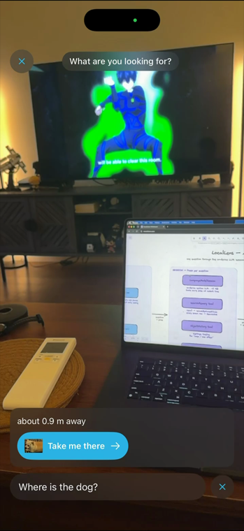
Schema flakes (“failed to deserialize” mid-stream): greedy sampling, which is markedly more schema-faithful on the small model, plus exactly one retry. Deterministic enough to log and reproduce.
Tool-call loops (“where is the bottle?” spent three minutes “thinking”): greedy
sampling is deterministic, and the model locked into repeating the identical
searchMemory call, appending the same five-row payload to the transcript until the
4k context window overflowed; the retry then replayed the exact same loop. Now a per-ask tool
budget answers any repeated or over-cap call with one short line (“stop calling tools and
answer now”), a 30 s deadline bounds the wait, and overflow or timeout skips the retry and
goes straight to the recall fallback. A later run showed a model willing to eat blocked calls
indefinitely, so past twice the budget a watchdog cancels generation outright. This round
surfaced after week twelve, while drafting this post; the verbatim Agent log
pinned it in one read.
Confident answers about absent things (“where is the remote?” with no remote
mapped): validateTarget correctly refused guidance, but the model’s prose still
said “about 1.0 m away,” narrating the closest look-alike row, a dining table. The
instructions tell it to admit absence; it reliably does not. The refusal case is fully
deterministic, so the app overwrites the answer with honest copy (“I haven’t seen a remote
yet”), and questions about people get their own truthful line (“I don’t keep track of where
people are, only things”). The words and the missing button finally agree.
What this section cannot give is failure rates. Each of the six modes was observed at least once in normal use and each fix was verified against its repro, but without the eval harness of Section 10 there are no denominators, and the retrospective counts that as a real cost. Two failure classes a reader might expect are structurally absent rather than measured away: tool selection cannot go far wrong because the model has exactly two tools, both read-only over the same store, and the model never parses SQL because tools return typed rows, not query output. When a tool call itself fails, the fallback chain is fixed: budget refusal → deadline → recall fallback, where the app answers from the typed search results directly and says it is doing so.
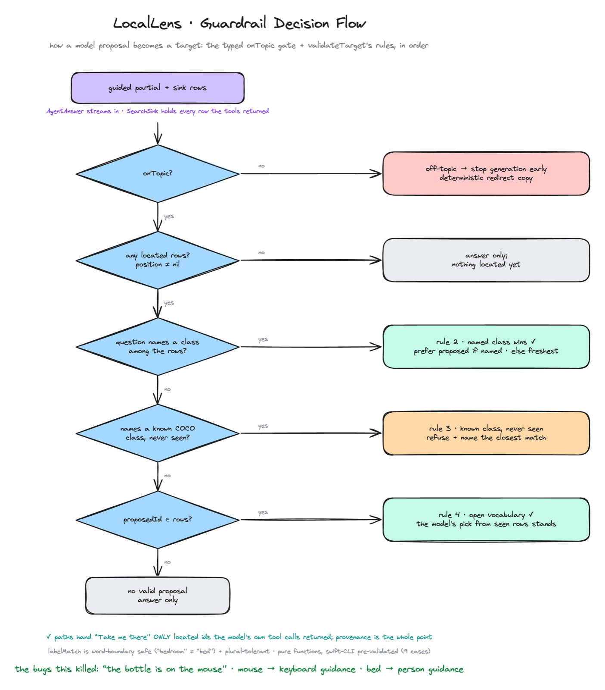
The prompt still bans what prose should ban: the model states distances and times only,
never spatial relations between objects, because it knows each object’s distance from the user
and nothing about objects’ relations to each other (an early build cheerfully reported “the
bottle is on the mouse”). But every guarantee a user can rely on is enforced in Swift, and a
verbatim Agent log category means any bad answer is diagnosable from one run.
6.2 The handoff, and the state machine around it
The model never navigates. It proposes; the validated target renders as a card (Figure 17, right); the human taps “Take me there,” and the guidance loop of Section 5 takes over inside the explore/ask/guide state machine (Figure 19). While guiding, live lock-on snaps the target to a fresh re-anchor when either the instance id matches or a same-class anchor lands within 0.75 m of the target (appearance drift sometimes files the fresh observation under a duplicate instance; the distance test catches that case). That proximity rule earns its final, much tighter form in Section 7, after look-alike twins abuse the generous version.
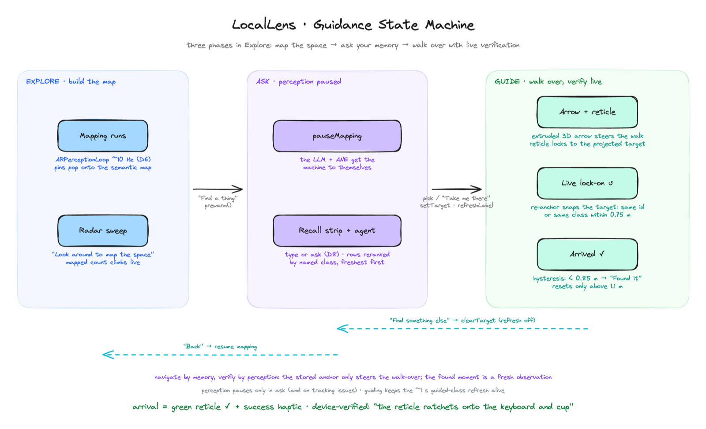
6.3 The performance coda: hangs and scatter were one disease
Wiring the agent in produced 2–3 s freezes on “Find a thing,” and, strangely, worse
anchor accuracy. They had one cause: work stealing time from the wrong threads. Session
creation and prewarm() map model resources (seconds, moved off-main); the
framework’s availability check can IPC (cached, checked off-main); perception now pauses
during the ask phase so the LLM and the ANE aren’t fighting while the user types; the semantic
map caches its world-coordinate paths instead of rebuilding them per frame; and every
observable mutation from background tasks goes through the main actor properly. ARKit had been
saying so in the logs the whole time (“resource constraints,” retained-frame warnings). Anchor
scatter is what a starved tracker looks like from the outside.
Main-actor hygiene is anchor accuracy. Between this coda, the depth model’s fast-only variant during AR (the 518-px pass strained tracking), and the filesystem lesson of Section 5, every accuracy regression in the spatial system traced to somebody taking time near the perception path, never to the geometry.
7 When the world moves
Everything above quietly assumes the world holds still between sightings. It does not. A thirteenth week tested the memory against a moving one, and the forcing incident took a single repro: two visually distinct bottles under a metre apart, one moved across the room. Guidance walked to the stale anchor and drew the reticle over empty space, and live lock-on then snapped the target to the other bottle, because the snap rule was class plus proximity and nothing else. That one run indicted four assumptions at once: lock-on trusted class as identity, arrival trusted proximity as presence, the store recorded only positive sightings (nothing could ever unlearn a spot), and no mechanism retired ghosts, the anchors of objects that are no longer there.
7.1 The negative result: appearance cannot tell twins apart
The planned fix was an appearance gate: lock-on would compare a candidate’s crop embedding against the guided instance’s stored one and snap only above a threshold. Two fresh-memory device runs disproved the design. Twin-versus-twin cosines ranged 0.68–0.89 while same-object, different-instance cosines sat at 0.71–0.76: the distributions interleave, and no threshold separates them. What separated cleanly was geometry. Duplicate filings of the guided object re-anchored within 0.06 m of the target; twins lived at their own spots, 0.43 m and beyond.
So identity decisions went geometry-first. Lock-on’s class branch now requires the fresh anchor to land essentially on the target (0.35 m, sized from the p90 re-anchor scatter of 19 cm plus margin), with the appearance test kept as a secondary filter. The same runs exposed the store-level version of the disease: sub-metre twins cross-merged, both bottles’ crops feeding one instance whose anchor blended to a point between them, and the rightly ungated id-snap then followed the poisoned identity. The merge rule became distance-graduated: cosine 0.80 suffices within 0.35 m, claiming “same object, different spot” out to 1 m requires 0.92 (above every measured twin cross-cosine), and beyond 1 m the spatial veto stands. The accepted trade-off is that a genuine sub-metre move sometimes mints a duplicate instead of merging. Duplicates are recoverable; blended anchors were not.
7.2 Absence is evidence
A budgeted sweep (at most three anchored instances per perception pass, round-robin) now
decides what one look at a stored anchor proves: absent (the spot projects into view,
LiDAR confirms a clear sightline, and no same-label detection covers it), covered (a
same-label box sits on the spot), or no evidence (out of view, out of range,
occluded). Three absent samples at least a second apart flip the instance to
missing; any sighting flips it back. This is also where “moved” and “someone is
standing in front of it” come apart: a person or a moved chair between camera and anchor
makes LiDAR report the occluder’s depth, the clear-sightline test fails, and the sample lands
in no evidence, moving no counters. Only an unobstructed view of an empty spot
testifies against an object, and it has to do so three times, seconds apart.
The sweep computes no embeddings and never decides identity. Confirmation is the merge path’s job, absence is the sweep’s, and a covering same-label box forgives accumulated misses rather than counting toward them. That division of labor is also what keeps twins from retiring each other: the twin’s box sits on its own spot, not on the ghost’s.
The tuning was evidence-driven. Absence claims are range-gated by detector reliability
(object size × 10, clamped to 2–4 m) after a bottle at 3.1 m falsely flipped missing:
it projects fine and LiDAR sees past it, but the detector simply cannot see a bottle at that
range, and absence of detection is not absence. Person instances are exempt (a missing person
is meaningless). The UI states the result plainly: missing pins go dim and dashed, the status
line reads “Mapped 8 things · 1 missing,” the agent’s rows say last known spot
(1.2 m away), not seen there recently, and a Mark as moved action lets the
user say it first. Arrival honesty landed with it: the reticle turns green with the found
haptic only when a gated live re-detection confirms the object within the last two seconds;
proximity alone earns amber, an enlarged dashed search area rather than a tight box,
because a removed object’s anchor carries uncorrectable drift. When a rejected same-class
anchor appears somewhere else while the user stands at a ghost, a suggestion card offers it
explicitly (“Another remote is mapped 0.7 m from you”). It never retargets silently; at twin
distances, confidence would be a lie.
7.3 Motion without fearing outliers
The 15 cm re-anchor clamp of Section 5 exists to stop single bad fusion
fits from dragging anchors, and it also made genuine moves converge by crawling: a bottle
moved 0.84 m kept its identity through the graduated merge, then its stored anchor lagged at
15 cm per re-anchor. Two escape hatches preserve the clamp’s outlier containment. A
consensus snap teleports the anchor when the last three raw observations all land at
least 0.5 m away and agree pairwise within 0.3 m (one 0.86 m bad fit still moves nothing),
observed live as relocated (consensus) Δ=0.52 m, with the next ask
targeting the new spot directly. And when the same live track keeps re-anchoring an instance,
the tracker is watching the object move, so the update follows unclamped.
7.4 What it still cannot do
Two limitations are documented rather than hidden. Twin swap: if two look-alikes exchange places, both spots read covered, appearance cannot arbitrate, and guidance will confidently indicate the wrong one; resolving it would take texture-level re-identification or asking the user. Small far objects are unknowable to the sweep: a phantom whose spot is only ever seen from beyond its detection range keeps its pin until someone walks near it, contained meanwhile by freshest-first ranking and lock-on rejection. Identity linking is deferred with reasons: a moved object is currently two instances with split history, so “where was it before?” has no answer yet. The test suite ended the week at 212.
8 How it was built
The calendar first, since the whole post cites it: Table 4 maps the thirteen weeks, one line each, with the section that unpacks each one.
| Wk | Theme | What landed | § |
|---|---|---|---|
| 1 | Live detection MVP | YOLO26n live at 30 fps; the 13.5 ms baseline | 2 |
| 2 | Pipeline anatomy | warmup, compute units, op placement, quantization; the real cost was preprocessing | 2, 3 |
| 3 | Metal preprocessing | CPU resize → GPU letterbox, 13.5 → 8.9 ms | 2 |
| 4 | Tracking + events | SORT/ByteTrack tracker, event log, SQLite; tests 1 → 39 | 4 |
| 5 | Semantic search | MobileCLIP2 keyframe index, vDSP recall; the eval that caught its own bias | 4 |
| 6 | Segmentation + depth | SAM tap-to-segment, DAv2 depth, both off the hot loop | 2, 3 |
| 7 | Adaptive scheduler | tier policy + multifunction 640/320; the −82% ablation | 2 |
| 8 | Reach + profile | Siri/Spotlight, video import, Instruments profile; two claims corrected | 1, 2 |
| 9 | Instance memory | detections become persistent instances; recall by text, image, category | 4 |
| 10 | 3D anchors + product | LiDAR + DAv2 fusion → world anchors, semantic map; the Explore/Memory app | 5 |
| 11 | Guidance polish | extruded 3D arrow, stabilized map fit | 5 |
| 12 | The agent | ask-your-memory on the system LLM; the hang-and-scatter coda | 6 |
| 13 | Object permanence | moved, missing, and look-alike objects; absence as evidence | 7 |
Then five working habits, each with the concrete moment that justified it. No methodology beyond what the project actually used.
Instrument before optimizing. The os_signpost spans and CSV
bench harness went in during week 1, before any optimization. Every rung of
Section 2 exists because the measurement did. The two public corrections in
this post were both forced by an Instruments trace disagreeing with my story.
Pure cores, pre-validated off-device. My toolchain could not compile the app from the CLI, so every pure algorithm (the tracker, the scheduler policy, the depth fusion, the spatial math, the target validator, the BPE tokenizer) lives in plain Swift files with no framework types, mirrored into small command-line programs and run on a Mac before they ever ran on the phone. The fusion conditioning bug and eight validator edge cases died on the desk instead of in AR. The limit is real, though: mirrors prove logic, only the device build proves integration (the decoder-transform bug of Section 4 sailed past a simplified mirror).
Tests grew with the risk, not the calendar. One test at week 1, 39 when the tracker landed, 212 at the end. The debt of the first two weeks was flagged in the retrospective both weeks, and paying it down was the moment the project could refactor without fear.
Honest metrics are bug detectors. The mapped-object counter found the spatial-distinctness bug (Section 5). The mean/median split in the re-anchor metric found the outlier tail. A metric designed to look good finds nothing.
Verify APIs before writing code against them. With no CLI compile loop, a
wrong API guess costs a full human build-and-run round trip.
MeshResource(extruding:) was checked against documentation and a compiled sample
before the arrow was written; the Foundation Models API drift (a type that existed in the beta
and not in the shipped SDK) got the same treatment after it burned one round.
9 Retrospective
The project keeps a running retrospective with a “got right / thin / would redo” entry per week. The would-redos, condensed and unsoftened:
- Stand up the test target on day one. It was nearly free when
BoxTransformwas the only pure code, and it was friction by week 4. Flagged in two consecutive retros before it got fixed. - Measure on-device latency before declaring a quantization Pareto. The size and parity axes were measured in week 2; the latency arm landed weeks later. The conclusion survived, but that was luck, not process.
- Spend complexity budget where the latency is. Week 3’s concurrent-pipeline work bought ~0.5 ms while an unexplained ~5 ms live-vs-lab gap sat unexamined for five more weeks. Investigate the anomaly first.
- Pre-validate the exact shipping code, not a simplification. A simplified SQL mirror passed while the real query had a missing column; the device build caught it.
- Measure before mechanising. The object-permanence week built an appearance gate for lock-on, then disproved it with one fresh-memory session of cosine data (Section 7). Collecting that data first would have built the mechanism once instead of twice.
- Write down what evidence would justify a shipped constant. The 0.75 m lock-on radius survived three weeks unexamined, because nothing forced the question until a twin sat at 0.43 m from a stale target.
Starting the same project again today, two of Section 10’s items would be day-one architecture rather than endnotes: the agent eval harness and session-stamped anchors. Both are cheap early and expensive late, and both were flagged as debt while there was still calendar to pay it.
And the standing critique of the evidence itself, stated plainly so nobody has to discover it in a footnote: every benchmark in this post is single-device and mostly single-run (run-to-run variance is visible in places, like int8’s 7.1 ms beating fp16’s 7.4 ms); tracking quality rests on correctness tests and low-event proxies, not MOTA/IDF1; the re-anchor consistency evidence is three small sessions (n = 12, 6, 19) plus one instrumented session (n = 33), reported per-run and never pooled; the object-permanence thresholds (0.35 m, 0.92, size × 10) trace to measured incidents on one device in one room and none were swept; the twin-cosine evidence is roughly twenty pairs from four objects; the spatial evidence as a whole is one furnished room under ordinary indoor lighting, with no low-light or multi-room arm; the memory and battery numbers of Section 2 come from a second profiling session on the finished build, but its runs were short and unsegmented, so per-phase footprint (what the ask alone costs) is still unknown and the ANE power arm was never re-captured after week 8; and the quantization variants still ride in the shipped bundle as 11 MB of ablation ballast. The missing agent eval harness now has a visible cost: descriptive queries still trip deterministic tool loops that a watchdog contains rather than cures. A reviewer should weigh the claims accordingly. I would rather under-claim here than have one number in this post that doesn’t survive a second look.
10 What’s next
Four items, in the order I would do them.
Cross-session anchors. Stored positions survive across launches, but
ARKit’s world origin does not, so guidance to an object mapped in a previous session points
into a dead coordinate frame until the object is re-seen. The fix is either honest UI
(session-stamp instances; offer “take me there” only for this session’s anchors and render
older ones as “last seen here”) or real relocalization via ARWorldMap
persistence. I would ship the honest UI first; it is a day of work and removes the sharpest edge. Multi-room
is the same problem scaled, and the constraint is not memory (anchors are rows; a whole flat
is kilobytes): it is relocalization robustness across per-room world maps.
An agent eval harness. All six hardening rounds in Section 6 were found by using the app. Every one of them was scriptable in advance: a fixture store, a bank of questions (on-topic, off-topic, absent-object, open-vocabulary), and assertions on the validated target. The admission is that I built the guardrails reactively; the harness turns them into regression tests, and Section 9 already names its absence as a cost that compounds.
Identity linking. A moved object is currently two instances with split history (Section 7). Linking a freshly created instance to a same-label one that just went missing, at a stricter appearance bar, would transfer sighting history and make “where was it before?” answerable. The absence sweep’s counters will say how often the case actually occurs before the schema work is paid for.
visionOS, eventually. The perception core is portable by construction (pure Swift, no UIKit in the loop), and a headset is the natural body for “walk me back to it.” Far stretch, listed to be honest about the direction rather than as a plan.
11 Resources
The code is public at github.com/pranav6670/LocalLens:
app/: the full application and its 212-test suite, ready to open in Xcode 26 and run on a LiDAR iPhone.models/: the complete model pipeline.convert_all.shfetches and converts every Core ML model in Table 2 (Ultralytics export, quantization variants, both multifunction merges, MobileCLIP2, SAM 2.1) and places each one where the app expects it; the prebuilt bundle also ships as a release asset.- The parity and retrieval evaluation scripts behind Sections 3 and 2 live in the same folder, so the accuracy numbers are re-derivable, not just the app.
The app does not ship to the App Store; the repository is the product. The measurement trail behind this post (per-run CSVs, Instruments traces, and the day-by-day worklog this post condenses) is a private archive, but the reproduction path is better than an archive: every bench that produced a number here ships inside the app, behind the Developer Mode toggle (Figure 20). If you re-run any number on your own device and get something different, open an issue; I want to know.
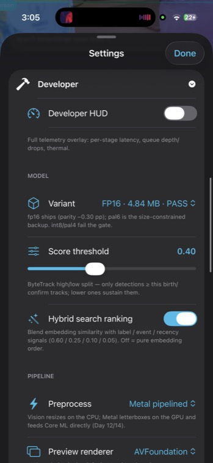
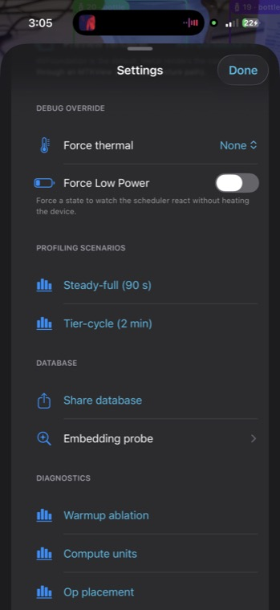
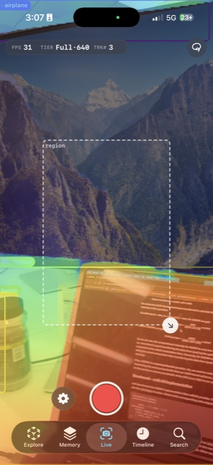
References
- Ultralytics. YOLO26: models and documentation. docs.ultralytics.com, 2026.
- T.-Y. Lin, M. Maire, S. Belongie, et al. Microsoft COCO: Common Objects in Context. ECCV 2014. arXiv:1405.0312. (COCO128 is the Ultralytics 128-image subset used for parity harnesses.)
- P. K. A. Vasu, H. Pouransari, F. Faghri, R. Vemulapalli, O. Tuzel. MobileCLIP: Fast Image-Text Models through Multi-Modal Reinforced Training. CVPR 2024. arXiv:2311.17049.
- Apple ML research. MobileCLIP2 model family (S2 variant used here). Model release, 2025. huggingface.co/apple/MobileCLIP2-S2.
- N. Ravi, V. Gabeur, Y.-T. Hu, et al. SAM 2: Segment Anything in Images and Videos. arXiv:2408.00714, 2024.
- A. Bewley, Z. Ge, L. Ott, F. Ramos, B. Upcroft. Simple Online and Realtime Tracking. IEEE ICIP 2016. arXiv:1602.00763.
- Y. Zhang, P. Sun, Y. Jiang, et al. ByteTrack: Multi-Object Tracking by Associating Every Detection Box. ECCV 2022. arXiv:2110.06864.
- A. Radford, J. W. Kim, C. Hallacy, et al. Learning Transferable Visual Models From Natural Language Supervision. ICML 2021. arXiv:2103.00020.
- G. Ilharco, M. Wortsman, R. Wightman, et al. OpenCLIP. 2021. github.com/mlfoundations/open_clip.
- L. Yang, B. Kang, Z. Huang, et al. Depth Anything V2. arXiv:2406.09414, 2024.
- Apple. Foundation Models framework. Apple Developer Documentation, iOS 26. developer.apple.com/documentation/foundationmodels.